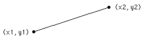

Draw.ThickLine (x1, y1, x2, y2, lineWidth, Color : int)
The Draw.ThickLine procedure is used to draw a line on the screen from (x1, y1) to (x2, y2) using the specified Color.

This program draws a large X, reaching to each corner of the screen in two different colors. The maxx and maxy functions are used to determine the maximum x and y values on the screen. The point (0,0) is the left bottom of the screen, (maxx, maxy) is the right top, etc.
View.Set ("graphics")
% First draw a line of 5 pixel width from the left bottom to right top
Draw.ThickLine (0, 0, maxx, maxy, 5, brightred)
% Now draw a line of 5 pixel width from the left top to right bottom
Draw.ThickLine (0, maxy, maxx, 0, 5, brightgreen)
The screen must be in a "graphics" mode. See the View.Set procedure for details. If the screen is not in a "graphics" mode, an error will occur.
Exported qualified.
This means that you can only call the function by calling Draw.ThickLine, not by calling ThickLine.
View.Set, maxx, maxy and the various procedures in the Draw unit.